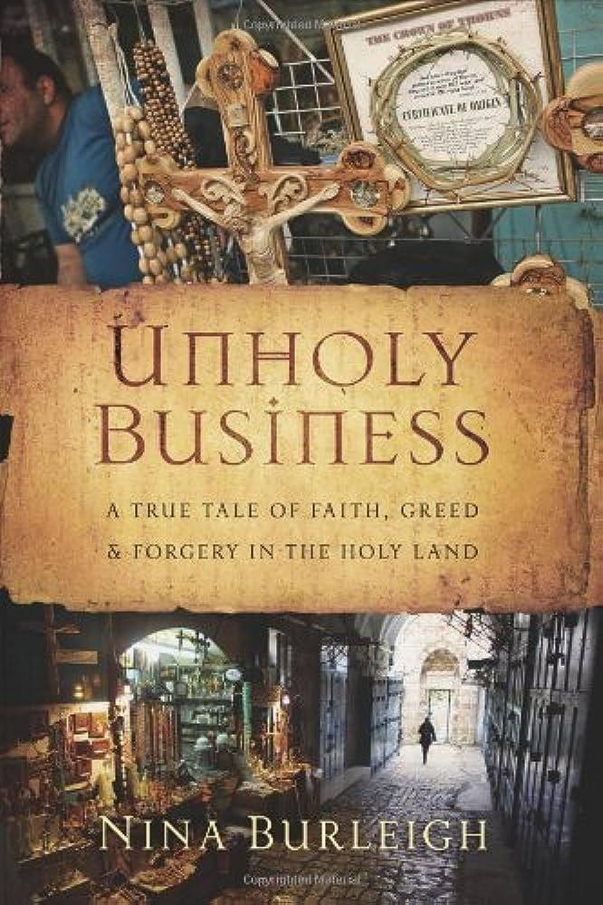

According to the Encyclopaedia Judaica, Volume 5, page 509, there are no credible grounds to question the historical existence of Yahushua.
"JESUS AND HIS FIRST DISCIPLES. As has been indicated before, the teaching and activity of Jesus cannot be properly described under the heading "Christianity." There is no valid reason for doubting his historical reality or assuming him to be a purely mythical figure."
Nevertheless, there are significant grounds to question the claims made by Christians regarding him. Based on our research and evidence, it can be argued that paganism, rather than the Torah/Laws of יהוה, plays a significant role in shaping Christianity.
The Encyclopaedia Judaica, Volume 5, page 511, admits this fact.
"With its spread among the gentiles, the pagan characteristics of Christianity gained in influence, and after Constantine the Great and the adoption of Christianity as the official religion of the Roman Empire, the traditional Hellenistic-pagan forms of civic, social, and cultural anti- Semitism (see *Apion) merged with the specifically Christian theological motifs to form an amalgam that has left a tragic legacy to history."
The most unfortunate aspect of Christianity's contribution to history is the distortion of the Set-Apart Scriptures to align with pagan ideologies and philosophies, rather than adhering to the original intention of יהוה's laws and the words of the prophets.
The Encyclopaedia Judaica, Volume 10, page 10, acknowledges that this is exactly what the church has done.
"Both of the chief sources of the Synoptic Gospels, the old account, and the collection of Jesus' sayings, were produced in the primitive Christian congregation in Jerusalem, and were translated into Greek from Aramaic or Hebrew. They contained the picture of Jesus as seen by the disciples who knew him. The present Gospels are redactions of these two sources, which were often changed as a result of ecclesiastical tendentiousness."
Surprisingly, even the Roman Catholic Church acknowledges the falsification of the Sacred Texts.
The Catholic Encyclopaedia, Volume 6, page 136, gives us this admission.
"Substitution of false documents and tampering with genuine ones was quite a trade in the Middle Ages. Innocent III (1198) points out nine species of forgery [of ecclesiastical records] which had come under his notice. But such frauds of the Church were not confined to the Middle Ages; they begin even with the beginning of the Church and infest every period of its history for fifteen hundred years and defile nearly every document, both of "Scriptures" and of Church aggrandizement. As truly said by Collins, in his celebrated Discourse of Free Thinking: "In Short, these frauds are very common in all books which are published by priests or priestly men... For it is certain they may plead the authority of the Fathers for Forgery, Corruption and mangling of Authors, with more reason than for any of their Articles of Faith.." (p.96.)"
By manipulating and modifying the Sacred Texts, including the inspired teachings of Yahushua, Christianity has created a false deity and a lifestyle that contradicts the Torah of יהוה. The Roman Catholic Church has cleverly presented a major false belief to the world, which involves a pre-existing deity who saves and is part of a group of three deities. This concept originates from pagan belief systems. Now, we will observe how Christians manipulated and twisted The Set-Apart Scriptures to escape accountability.
The Encyclopaedia Judaica, Volume 12, page 1061, agrees that the original versions of Volume Two of the Holy Scriptures did not teach a pre-existent God-Saviour.
"The spirit of Judaism is discernible even in the compositions originally written in this popular Greek. The New Testament is still far removed from the absolute deification of Jesus, and even more so from the LATER idea of the Trinity."
In our analysis, we will explore specific Scriptures that Christians manipulated and inaccurately translated in order to mislead their followers. One fact remains unquestionable, they were unable to distort all of them and numerous Scriptures contradict the "Pre-Existence Forgery," including those within the King James Version.
Forgery in the Gospels
When comparing the New Testament in the Sinai Bible with a contemporary version, an astonishing number of 14,800 editorial changes can be recognized. Anyone can and should do a simple comparative exercise to identify these amendments. The New Testament in the Sinai Bible should be the primary source for in-depth research on the origins of Christianity, rather than relying on modern editions.
It is noteworthy that the Sinaiticus includes three Gospels which were previously disregarded: the Shepherd of Hermas (authored by two individuals who had been resurrected, Charinus and Lenthius), the Letter of Barnabas, and the Songs of Solomon. Space does not allow for further explanation of these unusual writings or debate about the challenges that arise from differences in translation. Modern versions of the Scriptures have undergone five translations since their early editions, causing disagreements among translators regarding over 5,000 ancient terms and their varied interpretations. However, the Church feels uncomfortable with the aspects that are missing from the ancient Scripture, and this piece focuses on just a handful of those exclusions. An evident instance is subtly brought into light in:
The Encyclopaedia Biblica (Adam & Charles Black, London, 1899, vol. iii, p. 3344), where the Church divulges its knowledge about exclusions in old Scriptures, saying: "The remark has long ago and often been made that, like Paul, even the earliest Gospels knew nothing of the miraculous birth of our Saviour".
This is due to the fact that there was never a birth where the mother was a virgin.
It seems clear that when Eusebius gathered scribes to write the New Testimonies, he initially created a single document that served as a model or original version. Nowadays, the Gospel of Marqos/Mark is recognized as "the first Gospel written" (Catholic Encyclopaedia, Farley ed., vol. vi, p. 657), despite its current placement as the second book in the New Testament. The authors of the Gospels of Mattithyahu/Matthew and Luqas/Luke relied on the Gospel of Marqos/Mark as their main source and structure for creating their own writings. The Gospel of Yochanan/John stands on its own and is not influenced by other writings. Contrary to previous beliefs, it is now acknowledged that this gospel was written later to complement the earlier texts. (The Crucifixion of Truth, Tony Bushby, Joshua Books, 2004, pp. 33-40).
As a result, the Sinai Bible's Gospel of Marqos/Mark presents the initial account of Jesus Christ, which greatly diverges from the version found in modern Bibles. The story begins with Jesus when he reaches approximately thirty years old according to the Gospel of Marqos/Mark. At this point, he is unaware of Miryam (Mary), the concept of a virgin birth, as well as the atrocious act committed by Herod of killing infant boys. In the original text, the opening narrative does not refer to Jesus Christ as "the son of God" like it does in contemporary versions (Marqos/Mark 1:1). Additionally, ancient Scriptures do not include a family tree connecting Jesus to King David, nor do they contain what is now referred to as "messianic prophecies" (a total of 51). The
Sinai Bible presents a different account of the "raising of Lazarus" and surprisingly does not mention the crucial events of Jesus Christ's resurrection appearances and ascension into Heaven, which later became fundamental beliefs in Christianity. There are no ancient Gospels of Marqos/Mark that contain any supernatural sightings of a resurrected Jesus Christ, but in modern Scriptures, a detailed account of over 500 words can be found in Marqos/Mark 16:9-20.
Although Church apologists have provided numerous lengthy justifications, Christian opinion is divided when it comes to the absence of "resurrection" appearances in ancient Gospel narratives. The Sinai Bible, the Alexandrian Bible, the Vatican Bible, the Bezae Bible, and an ancient Latin manuscript of Marqos/Mark, also known as "K" by experts, all lack these narratives. These elements are absent in the earliest Armenian rendition of the New Testament, as well as in manuscripts of the Ethiopic version dated to the sixth century and Anglo-Saxon Scriptures from the ninth century. Nonetheless, certain Gospels from the 12th century contain resurrection verses that were marked by scribes using asterisks, a convention used to denote doubtful passages in a written text.
The Church claims that "the resurrection is the fundamental argument for our Christian belief" (Catholic Encyclopaedia, Farley ed., vol. xii, p. 792), yet no supernatural appearance of a resurrected Jesus Christ is recorded in any of the earliest Gospels of Marqos/Mark available. A resurrection and ascension of Jesus Christ is the sine qua non ("without which, nothing") of Christianity (Catholic Encyclopaedia, Farley ed., vol. xii, p. 792), confirmed by words attributed to Paul: "If Christ has not been raised, your faith is in vain" (Qorintiyim Aleph/1 Cor. 5:17). The resurrection verses in today's Gospels of Marqos/Mark are universally acknowledged as forgeries and the Church agrees, saying "the conclusion of Mark is admittedly not genuine ... almost the entire section is a later compilation" (Encyclopaedia Biblica, vol. ii, p. 1880, vol. iii, pp. 1767, 1781; also, Catholic Encyclopaedia, vol. iii, under the heading "The Evidence of its Spuriousness"; Catholic Encyclopaedia, Farley ed., vol. iii, pp. 274-9 under heading "Canons"). Undaunted, however, the Church accepted the forgery into its dogma and made it the basis of Christianity.
The ongoing trend of fictional stories about resurrection persists. The last section of the book of Yochanan/John (Chapter 21) is a fabricated addition from the sixth century that focuses solely on Jesus appearing to his disciples after his resurrection.
The Church admits:
"The sole conclusion that can be deduced from this is that the 21st chapter was afterwards added and is therefore to be regarded as an appendix to the Gospel" (Catholic Encyclopaedia, Farley ed., vol. viii, pp. 441-442; New Catholic Encyclopaedia (NCE), "Gospel of John", p. 1080; also NCE, vol. xii, p. 407).
"The Great Insertion" and "The Great Omission" can be defined as two significant concepts or ideas that encapsulate and emphasize important aspects or elements, while also highlighting equally crucial elements that have been overlooked or left out.
The modern editions of the Gospel of Luqas/Luke have an astounding additional 10,000 words compared to the version present in the Sinai Bible. Out of the six words, Jesus is described as being taken up to heaven. However, this specific account cannot be found in the earliest versions of the Gospels of Luqas/Luke that exist today. ("Three Early Doctrinal Modifications of the Text of the Gospels", F. C. Conybeare, The Hibbert Journal, London, vol. 1, no. 1, Oct 1902, pp. 96-113). Ancient records contradict modern-day reports of Jesus Christ's ascension, suggesting a deliberate intent to deceive.
Currently, the Gospel of Luqas/Luke holds the record for being the lengthiest among the canonical Gospels. This is primarily due to the addition of "The Great Insertion," a remarkable 15th-century inclusion spanning approximately 8,500 words (Luqas/Luke 9:51-18:14). The act of including these fraudulent writings within the Gospel puzzles modernday Christian scholars, and regarding these writings, the Church made a statement.
"The character of these passages makes it dangerous to draw inferences" (Catholic Encyclopaedia, Pecci ed., vol. ii, p. 407).
Equally noteworthy, the ancient Gospels of Luqas/Luke do not include any verses from 6:45 to 8:26, which is referred to as "The Great Omission" among priests. This exclusion is responsible for a substantial 1,547 words. Present-day editions have filled this gap by incorporating passages copied from other
Gospels. In more recent editions of the Gospel of Luqas/Luke's account of the Last Supper originated in the 15th century. Despite this, the Church continues to present its Gospels as the unchanged and pure "word of God." ("Are Our Gospels Genuine or Not?", op. cit.)
The "Expurgatory Index"
Like the New Testament, the damaging writings of early "Church Fathers" were altered over time through numerous copies, with many of their records intentionally edited or suppressed.
After accepting the Council of Trent's decrees from 1545 to 1563, the Church went on to expand the practice of eliminating certain content and mandated the creation of a distinct catalogue of details to be removed from early Christian texts. (Delineation of Roman Catholicism, Rev. Charles Elliott, DD, G. Lane & P. P. Sandford, New York, 1842, p. 89; also, The Vatican Censors, Professor Peter Elmsley, Oxford, p. 327, pub. date n/a).
The Vatican created a unique office named Index Expurgatorius in 1562, whose purpose was to censor materials. The main aim was to prevent the dissemination of "incorrect excerpts from the early Church Fathers" that contained statements contradicting current beliefs.
When Vatican archivists came across "genuine copies of the Fathers, they corrected them according to the Expurgatory Index" (Index Expurgatorius Vaticanus, R. Gibbings, ed., Dublin, 1837; The Literary Policy of the Church of Rome, Joseph Mendham, J. Duncan, London, 1830, 2nd ed., 1840; The Vatican Censors, op. cit., p. 328). This Church record provides researchers with "grave doubts about the value of all patristic writings released to the public" (The Propaganda Press of Rome, Sir James W. L. Claxton, Whitehaven Books, London, 1942, p. 182).
The Encyclopaedia Biblica provides significant information by highlighting that there is a gap of approximately 1,200 years in Christian history that remains unknown: "Unfortunately, only few of the records [of the Church] prior to the year 1198 have been released". It was not by chance that, in that same year (1198), Pope Innocent III (1198-1216) suppressed all records of earlier Church history by establishing the Secret Archives (Catholic Encyclopaedia, Farley ed., vol. xv, p. 287). Some seven-and-a-half centuries later, and after spending some years in those Archives, Professor Edmond S. Bordeaux wrote How the Great Pan Died. In a chapter titled:
"The Whole of Church History is Nothing but a Retroactive Fabrication", he said this (in part):
"The Church ante-dated all her late works, some newly made, some revised and some counterfeited, which contained the final expression of her history ... her technique was to make it appear that much later works written by Church writers were composed a long time earlier, so that they might become evidence of the first, second or third centuries." (How The Great Pan Died, op. cit., p. 46)
Professor Bordeaux's findings are supported by the establishment of an official Vatican publishing division by Pope Sixtus V in 1587. In his own words, the Pope emphasized this development.
“Church history will now be established ... we shall seek to print our own account "Encyclopédie, Diderot, 1759).
According to Vatican records, it is documented that Sixtus V dedicated a significant portion of his papacy, specifically 18 months, to personally authoring a new version of the Bible. This revised edition was subsequently incorporated into Catholic teachings. "New Learning" (Catholic Encyclopaedia, Farley ed., vol. v, p. 442, vol. xv, p. 376).
The evidence that the Church wrote its own history is found in Diderot's Encyclopédie, and it reveals the reason why Pope Clement XIII (1758-69) ordered all volumes to be destroyed immediately after publication in 1759.
Gospel authors are exposed as imposters.
There is a related factor in this situation, which is documented in the Catholic Encyclopaedia. The clerical mindset is recognized when the Church acknowledges its lack of knowledge about the authors of its Gospels and Epistles, openly admitting that all 27 New Testament writings were originally anonymous.
"It thus appears that the present titles of the Gospels are not traceable to the evangelists themselves ... they [the New Testament collection] are supplied with titles which, however ancient, do not go back to the respective authors of those writings." (Catholic Encyclopaedia, Farley ed., vol. vi, pp. 655-6)
The Church maintains that "the titles of our Gospels were not intended to indicate authorship", adding that "the headings ... were affixed to them" (Catholic Encyclopaedia, Farley ed., vol. i, p. 117, vol. vi, pp. 655, 656). Therefore, they are not Gospels written "according to Mattithyahu/Matthew, Marqos/Mark, Luqas/Luke or Yochanan/John", as publicly stated. The full force of this confession reveals that there are no genuine Apostolic Gospels and that the Church's shadowy writings today embody the very ground and pillar of Christian foundations and faith.
The outcomes prove that the claim of the entire New Testament being of divine origin is false and reveal that Christian texts hold no exceptional power. Throughout history, the Church has mistakenly validated counterfeit Gospels as genuine, which now serves as proof that Christian writings are entirely false.
After devoting considerable time to studying the New Testament, Dr. Tischendorf was deeply disappointed by the differences between the ancient and recent Gospels, which led to his struggle in understanding them.
"...how scribes could allow themselves to bring in here and there changes which were not simply verbal ones, but such as materially affected the very meaning and, what is worse still, did not shrink from cutting out a passage or inserting one." (Alterations to the Sinai Bible, Dr. Constantin von Tischendorf, 1863, available in the British Library, London)
After extensively verifying the artificiality of the New Testament over the course of many years, a disheartened Dr. Tischendorf admitted that current editions:
"have been altered in many places" and are "not to be accepted as true"
(When Were Our Gospels Written? Dr. Constantin von Tischendorf, 1865, British Library, London).
There are two choices we can make regarding the origins of our English Scriptures. We can acknowledge the historical evidence that suggests they have altered versions of the Hebrew Truth influenced by Hellenistic paganism and make necessary corrections. Alternatively, we can choose to remain uninformed and continue to disrespect and blaspheme יהוה by falsely stating that “יהוה is Yahushua,” relying on Greek translations with pagan influences for our understanding of the Hebrew Scriptures. Ultimately, this decision has implications for our eternal lives.